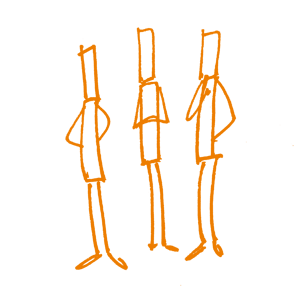

À propos des auteurs & facilitateurs
Les auteurs lors du sprint de rédaction
Sonja Bezjak
- University of Ljubljana, Slovenia
- sonja.bezjak@fdv.uni-lj.si
- @sonja_adp

Au service Archives de données des sciences sociales, je m'occupe principalement des questions liées au libre accès aux données de recherche. L'un de mes rôles est de former les différents intervenants à la politique des données de recherche, la planification de la gestion des données de recherche, la citation des données, les publications de données, etc. En tant que membre du groupe de formation ERIC du CESSDA, j'essaie de partager mes connaissances et mon expérience au niveau international.
J'ai été formée aux valeurs scientifiques, notamment la transparence et la reproductibilité, tout en étudiant la sociologie. Mais ce n'est que plus tard, grâce à des amis, un physicien et un ingénieur, que j'ai appris l'existence du mouvement Accès ouvert. J'ai immédiatement compris l'importance de diffuser l'idée de ne pas cacher ses découvertes et de partager ses connaissances avec les autres dès que possible. Ce n'est que lorsque j'ai commencé à travailler aux Archives de données des sciences sociales à l'Université de Ljubljana, Slovénie et que je me suis fortement impliquée dans le projet Données ouvertes, que j'ai réalisé à quel point il était essentiel de faire des efforts pour changer de culture et pouvoir surmonter les obstacles liés au non-partage ouvert des résultats de la recherche. J'espère que ce manuel contribuera à rendre la science aussi ouverte et compréhensible que possible.
Philipp Conzett
- UiT The Arctic University of Norway, Norway
- philipp.conzett@uit.no
- @philippconzett
- 0000-0002-6754-7911
Linguiste de formation, je n'avais qu'une vague compréhension de la science ouverte lorsque j'ai commencé à travailler comme bibliothécaire de recherche à l'UiT, l'Université Arctique de Norvège, en 2014. Heureusement, j'ai rapidement participé au développement et à la gestion de services d'appui à la recherche, notamment les dépôts de données de recherche ouverte, en commençant par un dépôt spécifique à la discipline (TROLLing), puis un dépôt institutionnel (UiT Open Research Data) et enfin un dépôt national (DataverseNO). Participer au sprint de rédaction du manuel Open Science a été une contribution enrichissante pour mes compétences en matière de formation.
Selon moi, les formateurs en science ouverte sont confrontés à deux grands écueils : Premièrement, les formateurs novices peuvent se sentir tellement dépassés par les sujets à couvrir et les ressources disponibles qu'ils ne se lancent pas. Deuxièmement, les formateurs expérimentés qui assurent la promotion de la science ouverte peuvent en faire trop, au risque de la transformer en un mouvement uniquement accessible aux initiés. J'espère que ce livre pourra aider à surmonter ces deux obstacles.
Pedro L. Fernandes
- Instituto Gulbenkian de Ciência, Portugal
- pfern@igc.gulbenkian.pt
- @pfern
- 0000-0003-2124-0241

Je dirige un programme de formation en bio-informatique à l'Instituto Gulbenkian de Ciência, à Oeiras, Portugal, depuis 1999. Cela présente plus de 5000 participants en 19 ans. J'ai étendu cette activité à la formation à distance et en ligne pour mieux atteindre les apprenants du XXIe siècle. Je suis un fervent défenseur de l'accès ouvert, des données ouvertes, des sources ouvertes et de la science ouverte et je saisis toutes les occasions possibles pour promouvoir ces causes par la formation. Je suis conscient que ce mouvement doit monter en puissance pour atteindre également les non-scientifiques ; c'est pourquoi je suis très intéressé par son amplification et sa diffusion.
La Science Ouverte est une attitude qui nécessite une étape d'éducation importante, mais réalisable. Ses défenseurs comme moi doivent unir leurs forces et faire en sorte que cela se produise chaque jour. Une formation en science ouverte est nécessaire à de nombreux niveaux. Pour répondre aux besoins au niveau seuil, Rutger A.Vos et moi avons conçu le livre électronique gratuit "Open Science, Open Data, Open Source" en 2017 (http://osodos.org). D'autres actions de sensibilisation et de formation sont au programme.
Edit Görögh
- University of Göttingen, Germany
- goeroegh@sub.uni-goettingen.de
- @gorogh_edit
- 0000-0002-0766-418X

Je travaille actuellement à l'Université de Göttingen en tant que responsable de projet pour OpenUP, un projet financé par l'UE qui vise à développer un cadre de cohésion pour de nouvelles méthodes, de nouveaux indicateurs et outils pour l'évaluation par les pairs, la diffusion des résultats de la recherche et la mesure de l'impact. Je suis impliquée dans la gestion des connaissances et les programmes liés à la science ouverte et à l'accès à la science depuis plus de 10 ans.
En travaillant pour des projets de science ouverte, j'ai eu la chance de faire connaissance à la fois avec la communauté diversifiée des défenseurs de la science ouverte et avec des groupes de chercheurs et de décideurs réticents et sceptiques, qui m'ont tous deux incitée à m'immerger davantage dans le discours de la science ouverte, à en suivre les développements et à me former aux outils et les méthodes permettant de parler efficacement des avantages et des défis auxquels nous sommes confrontés dans le monde changeant de la communication de la recherche.
Kerstin Helbig
- Humboldt-Universität zu Berlin, Germany
- kerstin.helbig@cms.hu-berlin.de
- @FrauHelbig
- 0000-0002-2775-6751

Je suis coordinatrice de la gestion des données de recherche à l'Université Humboldt de Berlin, en Allemagne. En ma qualité de conseillère, j'aide les chercheurs à gérer leurs données de recherche et j'organise des formations ainsi que des réunions d'information.
Pour moi, le plus grand défi de la formation en science ouverte est de montrer aux chercheurs que la science ouverte est plus qu'un objectif politique ou une responsabilité morale. Il est essentiel de leur montrer qu'il existe plusieurs niveaux de science ouverte. On peut commencer par un petit pas sans avoir à « s'ouvrir » complètement du jour au lendemain. Dans mes formations, j'aime particulièrement le mélange des expériences individuelles, des disciplines et des connaissances préalables. C'est ce qui rend la formation d'autant plus intéressante. Je me souviens d'un stage en particulier : un participant (un professeur) a enregistré un ORCID pendant la session, alors que je présentais les avantages des identifiants persistants.
Bianca Kramer
- Utrecht University, Netherlands
- b.m.r.kramer@uu.nl
- @MsPhelps
- 0000-0002-5965-6560
La journée, je suis bibliothécaire en sciences de la vie et médecine. Après le travail, je me consacre au projet 101 Innovations in Scholarly Communication (101 innovations en communication scientifique) en collaboration avec Jeroen Bosman. Nous faisons de la recherche, de la formation et la promotion de la science ouverte, afin de rendre la recherche plus pertinente, plus fiable et plus équitable.
Former à la science ouverte est enrichissant, car il ne s'agit pas seulement d'enseigner de nouvelles compétences aux personnes, mais également de débattre de concepts fondamentaux et d'échanger différents points de vue et opinions. Comme l'a dit un participant à l'un de nos stages : "Je suis venu pour acquérir des connaissances pratiques à appliquer dans ma recherche, mais j'ai découvert que je fais maintenant partie d'un mouvement". Pour moi, une formation réussie doit être interactive et pratique, afin d'encourager les apprenants à explorer de nouvelles voies et à remettre en question leurs perceptions. Cela s'applique aussi à mon propre rôle de formatrice : Avoir toujours l'esprit ouvert pour essayer de nouvelles choses et apprendre des personnes qui participent à ma formation.
Ignasi Labastida
- Universitat de Barcelona, Catalonia
- ilabastida@ub.edu
- @ignasi
- 0000-0001-7030-7030

Docteur en physique de l'Université de Barcelone (UB), 2000. Se consacre désormais à la science ouverte en tant que Chef du Bureau de diffusion des connaissances au CRAI de l'UB et leader public des Creative Commons en Espagne depuis leurs débuts en 2003.
« J'espère que dans un avenir proche, il ne sera plus nécessaire de se former à la science ouverte, car les pratiques qui sont décrites ici, seront les pratiques par défaut. Il ne sera plus nécessaire d'attacher l'étiquette "open" sur les outils et les chercheurs devront justifier pourquoi ils verrouillent certains de leurs résultats ou activités. Je pense que ce livre peut aider à parvenir à cette situation en montrant beaucoup d'exemples solides et de cas viables pour effectuer des recherches de manière ouverte. »
Kyle Niemeyer
- Oregon State University, USA
- kyle.niemeyer@oregonstate.edu
- @kyleniemeyer
- 0000-0003-4425-7097

Je suis professeur assistant en Génie mécanique à l'Université de l'Orégon à Corvallis, Oregon, États-Unis. Mon groupe de recherche étudie la combustion et les flux de fluides à l'aide de simulations informatiques et développe des méthodes numériques et des stratégies de calcul parallèle. Je suis un farouche défenseur de la science ouverte !
Lorsque j'étais étudiant de troisième cycle, je me suis souvent heurté à des obstacles dans mes recherches en raison de logiciels qui n'étaient pas partagés avec des codes ouverts. Aujourd'hui, en tant que chef d'un groupe de recherche, mes étudiants et moi sommes confrontés à des problèmes de disponibilité et de formatage des données lorsque nous travaillons sur des résultats issus de la littérature. Cependant, le simple fait de montrer aux autres combien il est facile de partager ouvertement les résultats de sa recherche peut suffire à accélérer le changement, tout comme le fait de montrer l'exemple.
Fotis Psomopoulos
- Center for Research and Technology Hellas, Greece
- fpsom@issel.ee.auth.gr
- @fopsom
- 0000-0002-0222-4273

Fotis est bio-informaticien à l'Institut des Biosciences Appliquées (INAB|CERTH) de Thessalonique, en Grèce. Il a obtenu son doctorat en génie électrique et informatique en 2010, avec une spécialisation en bio-informatique et en infrastructures électroniques, avec une mention particulière sur les méthodes ouvertes et reproductibles. Il consacre une grande partie de son temps à des activités de formation, tant au sein de structures universitaires formelles qu'au sein des Charpenteries en tant qu'instructeur et formateur certifié. Il est toujours à naviguer entre les outils sur son site internet.
Parmi ses missions : Convaincre les gens que passer le temps supplémentaire nécessaire à assembler un carnet Jupyter avec tous les textes, notes, scripts et données actuellement stockés dans divers dossiers "poussiéreux" et oubliés sur leur ordinateur, les aidera en fait à devenir un peu plus organisés. #petitesvictoires #reproductibilité
Tony Ross-Hellauer
- Know-Center GmbH, Austria
- tross@know-center.at
- @tonyR_H
- 0000-0003-4470-7027
Tony Ross-Hellauer est chercheur principal en sciences ouvertes au Know-Center de Graz, en Autriche. Il est titulaire d'un doctorat en Sciences de l'Information (Université de Glasgow, 2012) et est un défenseur enthousiaste de l'accès ouvert et de la science ouverte. Ses intérêts en matière de recherche portent principalement sur l'examen par les pairs, les métadonnées et la philosophie/l'histoire de la technologie.
Bien que la création et l'organisation d'événements de formation soient très intimidantes, former d'autres personnes non seulement à pratiquer la science ouverte, mais aussi à en percevoir la valeur pour leur recherche au quotidien, est l'un des aspects les plus gratifiants du travail dans ce domaine. En tant que formateur, lorsque les apprenants sont motivés à partager leurs propres expériences et que vous êtes témoin de la manière dont ils peuvent relier leurs nouvelles connaissances à leurs expériences, c'est très stimulant.
René Schneider
- HES//SO - Geneva School of Business Administration, Switzerland
- rene.schneider@hesge.ch
- @datosestupendos
- 0000-0003-4897-8561

René Schneider est professeur en Sciences de l'information à l'Ecole d'Administration des Entreprises de Genève (faisant partie de la Haute Ecole Spécialisée de la Suisse Occidentale). Formé à l'origine en tant que linguiste informatique, il s'intéresse principalement aux données et à tous leurs aspects.
J'ai découvert le domaine de la gestion des données de recherche assez récemment et je m'y suis principalement engagé en raison de la complexité et du potentiel élevé de la science ouverte. Après avoir dirigé un projet sur la formation de bibliothécaires pour en faire des instructeurs en gestion des données de recherche (www.researchdatamanagement.ch), j'ai constaté par moi-même que la science ouverte ouvre des portes, amène à une meilleure compréhension et réutilisation des résultats scientifiques et relie enfin la tour d'ivoire universitaire au monde extérieur.
Jon Tennant
- Open Science MOOC, Germany
- jon.tennant.2@gmail.com
- @protohedgehog
- 0000-0001-7794-0218

Jon a terminé un doctorat en Paléontologie récompensé par un prix, à l'Imperial College de Londres en 2017, deux ans après être devenu directeur de la communication de ScienceOpen, en 2015. Il poursuit désormais ses recherches de manière indépendante sur l'évolution des dinosaures, tout en travaillant à la création d'un MOOC consacré à la science ouverte, pour aider à former la prochaine génération de chercheurs aux pratiques ouvertes. Il est l'auteur d'articles sur le libre accès et l'évaluation par les pairs, il dirige actuellement l'élaboration du document stratégique sur les Fondements de la Science Ouverte et est le fondateur de la plateforme de publication numérique paleorXiv. Jon est également ambassadeur pour l'ASAPbio et le Center for Open Science, mentor du Mozilla Open Leadership et co-organisateur de la Rencontre de Berlin sur la Science Ouverte. Il est également médiateur et consultant scientifique indépendant et l'auteur d'un livre pour enfants intitulé Excavate Dinosaurs.
Je pense que l'aspect le plus stimulant de la science ouverte est l'éducation. C'est un paradigme extrêmement complexe, avec son propre lexique, ses pratiques, ses principes, et qui représente une barrière d'apprentissage assez élevée dans de nombreux cas. Toutefois, observer d'autres personnes développer leurs connaissances et leurs compétences est incroyablement gratifiant, et je me retrouve à en apprendre davantage à chaque nouvelle expérience. En définitive, nous avons tous le même objectif en tête : un système de recherche scientifique plus juste, plus équitable, plus transparent et plus rigoureux, et c'est une grande source d'inspiration que de voir les énormes progrès réalisés en la matière par la communauté mondiale des chercheurs, en particulier les jeunes générations.
Ellen Verbakel
- 4TU.Centre for Research Data, Netherlands
- p.m.verbakel@tudelft.nl
- @Ellen4TUData
- 0000-0002-8194-6724
Ellen est bibliothécaire de formation. Elle possède une longue expérience de bibliothécaire à la Technology University de Delft. Elle a ensuite travaillé aux Presses Universitaires de Delft et a organisé le processus d'examen par les pairs pour trois revues scientifiques. Elle a également mis en place l'accès ouvert et les revues, dès 2000 ! À partir de 2005, elle a développé le dépôt de publications de la TU Delft et elle est passée en 2009 au 4TU, le Centre des Données de Recherche des Pays-Bas (à l'époque 3TU.Datacentrum). En 2013, elle a co-construit la formation Essentials 4 Data Support et est depuis lors une formatrice enthousiaste.
Où en serions-nous sans la formation ? Nous devons être conscients de tous les aspects de la science ouverte et être capables de susciter l'enthousiasme chez beaucoup d'autres personnes ! Ce manuel a pour but d'aider les éducateurs à rendre leur formation plus efficace, afin que la science ouverte devienne la norme.
Auteurs participant au sprint à distance
April Clyburne-Sherin
- Code Ocean, USA
- april.clyburne.sherin@gmail.com
- @april_cs & @methodpodcast
- 0000-0002-5401-7751
April est épidémiologiste, méthodologue et experte en outils, méthodes, formation et gestion communautaire de la science ouverte. Elle est titulaire d'un master en médecine des populations (épidémiologie). Depuis 2014, elle se consacre à la formation des scientifiques aux méthodes de la recherche ouverte et reproductible (Center for Open Science, Sense About Science, SPARC). Dans son rôle actuel de scientifique de proximité, elle forme les scientifiques aux meilleures pratiques de reproductibilité informatique en utilisant Code Ocean.
J'ai la chance de gagner ma vie en formant d'autres scientifiques à améliorer leur pratique de la science. Ma communauté de soutien grandit à l'occasion de chaque atelier et j'espère que ce manuel pourra contribuer à élargir la communauté de formateurs en recherche ouverte. Les débats sur la science ouverte ont souvent lieu dans les chambres d'écho de chercheurs bien intentionnés (comme moi) et de bibliothécaires qui partagent ma vision du monde. De la même manière, la formation à la recherche ouverte peut être cloisonnée selon une perspective nord occidentale que l'on enseigne comme si elle était universelle. Prendre en compte le contexte et ajouter de nouvelles perspectives aux débats sur la recherche ouverte est la seule voie pour que le savoir fonctionne pour tout le monde. Le contenu que nous avons produit pendant ce sprint se limite à nos propres expériences, mais grâce à l'ajout et aux apports d'autres auteurs sur la base de leurs propres expériences, nous nous rapprocherons d'un manuel susceptible d'améliorer notre façon de parler de la science ouverte et de former d'autres personnes à cette discipline.
Les facilitateurs sur site

Helene Brinken
- University of Göttingen, State and University Library, Germany
- brinken@sub.uni-goettingen.de
- @helenebrinken
- 0000-0002-3278-0422
Responsable de la sensibilisation et de la promotion dans le cadre du projet FOSTER à l'université de Göttingen depuis mai 2017. Formée en sciences de l'information, spécialiste de l'apprentissage en ligne, de la convivialité et de l'expérience utilisateur, elle développe actuellement des supports d'apprentissage et anime des ateliers de formation.
Avant de travailler pour FOSTER, j'ai travaillé avec de jeunes activistes luttant pour l'éducation au niveau mondial et contre l'injustice sociale. J'ai appris à quel point la dynamique de groupe est importante et l'importance des résultats que l'on peut obtenir en associant nos forces. Le changement de culture commence au niveau des individus. Rassembler les chercheurs intéressés par la science ouverte peut être un grand pas en avant pour promouvoir la science ouverte dans votre institution. Soutenez-les, rencontrez d'autres enthousiastes et formez-les pour qu'à leur tour ils deviennent bientôt des ambassadeurs.
Lambert Heller
- TIB - German National Library of Science and Technology, Hannover, Germany
- lambert.heller@tib.eu
- @Lambo
- 0000-0003-0232-7085
Ayant étudié les sciences sociales, je suis bibliothécaire de formation et je travaille comme spécialiste de la discipline dans une bibliothèque universitaire depuis plusieurs années. En 2013, j'ai lancé le Laboratoire de Science Ouverte chez TIB (la Bibliothèque Nationale Allemande pour la Science et la Technologie), qui gère actuellement un certain nombre de projets subventionnés. Intervenir en tant que facilitateur et conseiller lors de sprints de rédaction de livres depuis 2014, a contribué à rendre populaire en Allemagne VIVO, un système d'information sur les recherches en cours (CRIS), gratuit et entièrement basé sur des données ouvertes liées. Cela a donné lieu à quelques discussions dans le monde des bibliothèques et ailleurs, par exemple sur la chaîne de diffusion des sciences, Blockchain for Science.
Lorsque j'organise des ateliers (par exemple, un atelier d'une demi-journée pour les doctorants et les post-docs de l'Association de recherche Leibniz en Allemagne depuis 2017, sur la question du profil scientifique et des services de rédaction collaborative), c'est toujours un plaisir d'exploiter la curiosité des apprenants. Même l'étudiant le plus occupé a des expériences, des questions et imagine comment les choses pourraient fonctionner au mieux pour lui. J'aime utiliser cette énergie positive ! Et cela permet à un formateur d'animer beaucoup plus facilement une session de formation.
Les auteurs lors de la mise à jour en 2023
+ 2023
Quatre membres du collège Formation du Comité pour la science ouverte ont participé à la finalisation de la traduction française, en corrigeant les coquilles restantes et mettant à jour certaines ressources. Il s'agit de Florence Bouchet, Romain Feret, Sacha Hodencq et Alain Marois.